Lab 11. Adding Communication from Driver to Console through HII
In this lab, you’ll add communication from the driver to the console through HII. More specifically, you’ll add code to retrieve a string from the HII database and print the string to the console. Then, you’ll add the string in French, change the language, and test to ensure the correct language is displayed. The reason the driver should avoid direct string text to the console without the HII support is because there is no localization for text string inside the driver’s source code. By using the HII database the strings are tokenized making localization easier.
Examine the MdeModulePkg.Chm for HII
- Use the .Chm reader and open the MdeModulePkg.Chm. For HII database library functions are in the MdeModulePkg .Chm file. Search on HiiLib.h functions
- Select the Index tab
- Type: HiiLib.h
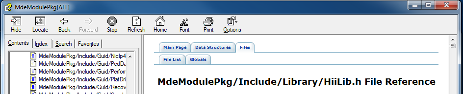 Note: Notice the list of Hii function calls available. To get Strings theHiiGetStringfunction can be used. 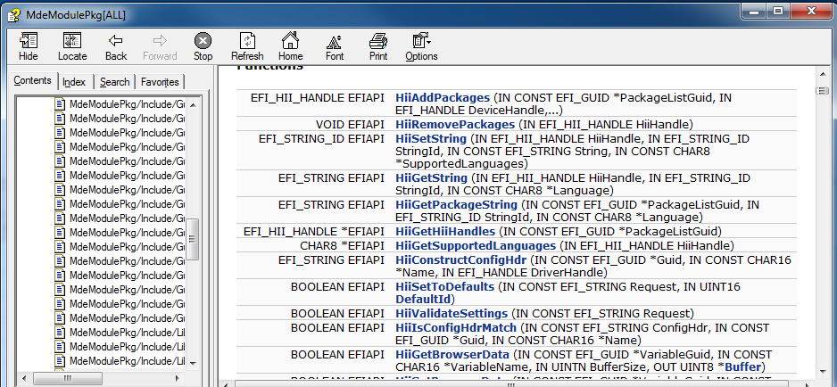
Add changes to your Driver
- Update the C:\Fw\edk2\Nt32pkg\Nt32pkg.fdf file
- Make your driver stand alone again. Remove (or comment out) the include statement in the Nt32pkg.fdf file:
#INF MyWizardDriver/MyWizardDriver.inf
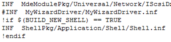 - Save Nt32pkg.fdf
- Update the MyWizardDriver.uni file
- Add the following code to the top of the file at approx. line 14 as shown:
#langdef fr-FR "Francais"
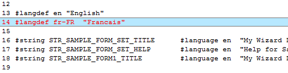 - Add the following code to the end of the file:
#string STR_LANGUAGE_TEST_STRING #language en "Laurie's Test String"
#language fr-FR "Chaîne de test de Laurie"
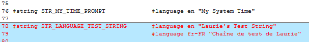
7). Save MyWizardDriver.uni
8). Update the MyWizardDriver.c file
9). Add the following local variable for StringPtr after “BOOLEAN ActionFlag;” and before “Status = EFI_SUCCESS;”(as shown below):
EFI_STRING StringPtr;
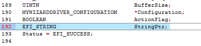
10). Add the following code after “FreePool (ConfigRequestHdr);” (as shown below) to edit the driver’s entry point with a debug and print statement by making a call to the HiiGetString for the token to print (at approx line 364):
StringPtr = HiiGetString (HiiHandle[0], STRING_TOKEN (STR_LANGUAGE_TEST_STRING), NULL);
DEBUG ((EFI_D_INFO,"[MyWizardDriver-Entrypoint] My String was: %s\n", StringPtr) );
Print(L"%s\n", StringPtr );
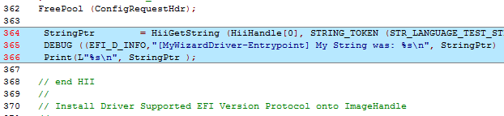
11). Save the MyWizardDriver.c
Build and test Driver
- Open the Visual Studio Command Prompt
- Type build
- Type build run
- At the UEFI Shell prompt,type fs0:
- Type Load MyWizardDriver.efi and then Press “Enter”
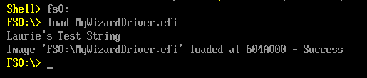
Notice that the string’s English version is displayed: - Type Reset and then Press “Enter”
- Type "build run" and then Press “Enter”
- Type "exit" at the shell prompt
Select Language and then Press “Enter” 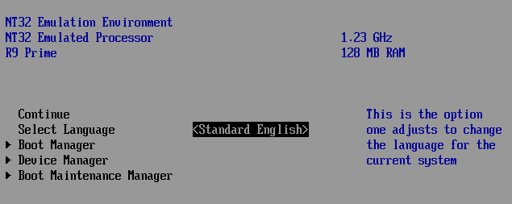
Select “Français” and then Press “Enter”
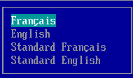- Select “Continuer” and then Press “Enter”
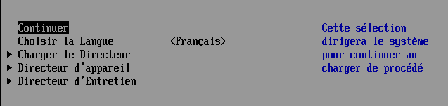 - At the Shell Prompt, type Fs0:
- Type load MyWizardDriver.efi
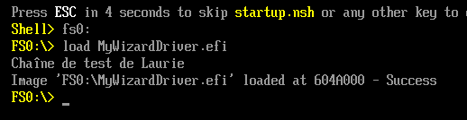 - Type “reset” and then Press “Enter” to return to the Visual Studio Command Prompt

For any build issues copy the solution files from C:\Fw\LabSolutions\LessonE.11
NOTE: Del Directory C:\fw\edk2\Build\NT32IA32\DEBUG_VS2010x86\IA32\MyWizardDriver before the Build command to build the MyWizardDriver Clean.
Make sure you update Nt32Pkg.fdf.